Peau d'âne (2025)
Clothing is a map of intimacy: it traces the contours of who we are—our desires, our fears, our personal stories. Each choice reveals a piece of our inner geography. Clothes touch the deepest part of our being; unconsciously, they tell something about who we are and how we feel, like a secret language.
Clothes are the maps of our interior, the traces of our secret landscapes. They draw the outlines of the invisible, reveal the folds of the soul, the valleys of our fears, the peaks of our emotions.
In this exhibition, clothing becomes painting, revealing an intimate geography where every stroke, every color, every gradient of grey, every twist tells a story of our bodies. Like maps, they guide us through the territories of identity—between shadow and light, between what we show and what we hide.
Here, these map-clothes invite us on a journey: discovering ourselves, others, and the thousand faces of intimacy. The painting becomes a reflection of our intimate map—an echo of who we are.
Faces
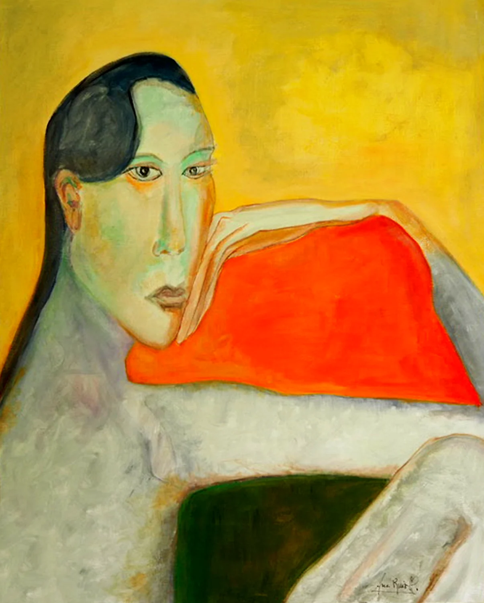
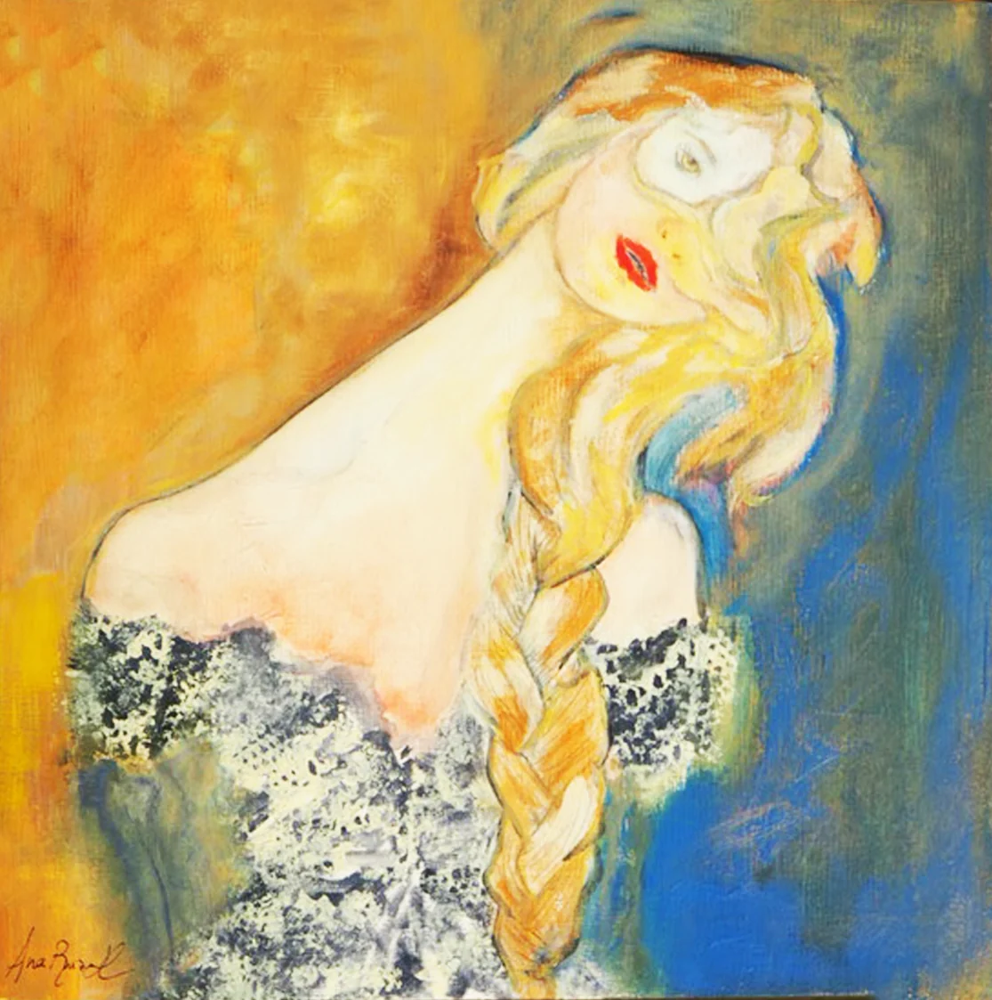
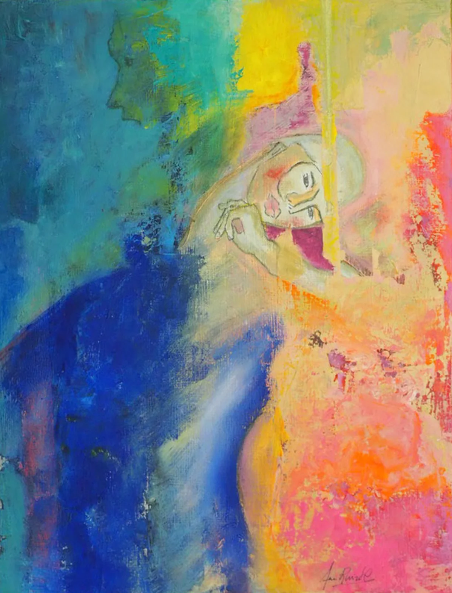
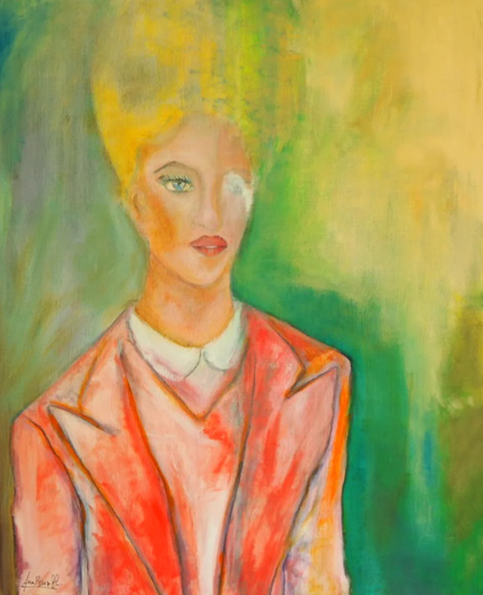
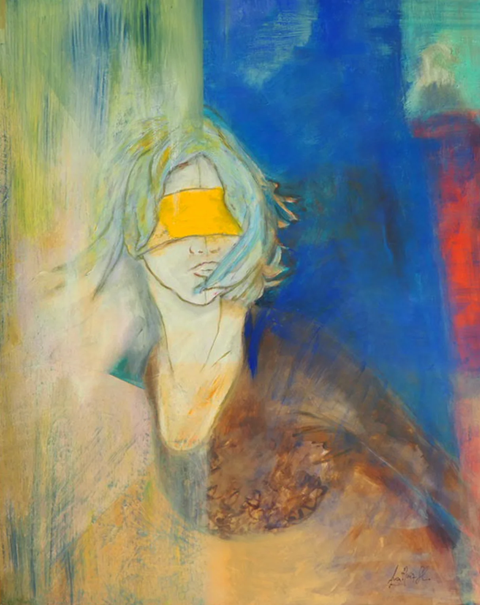
Garments
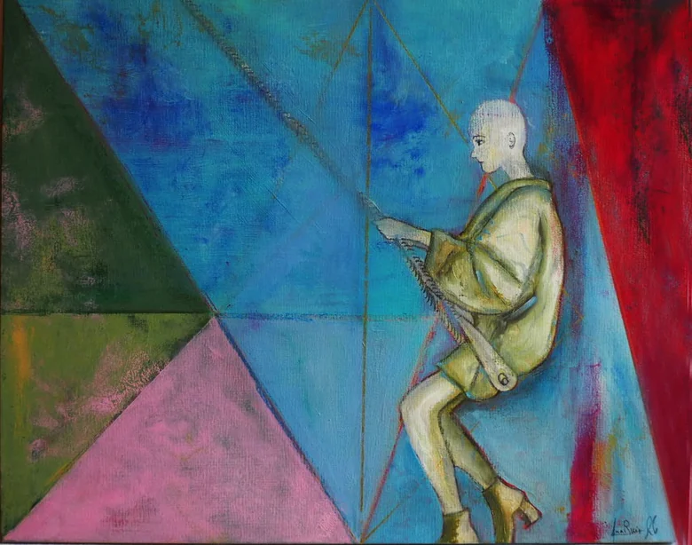
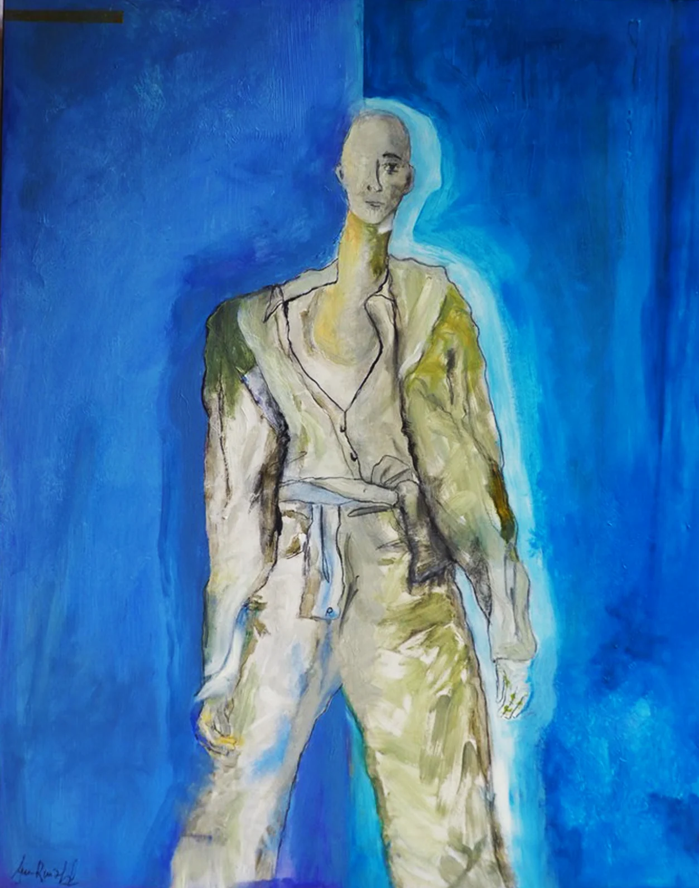
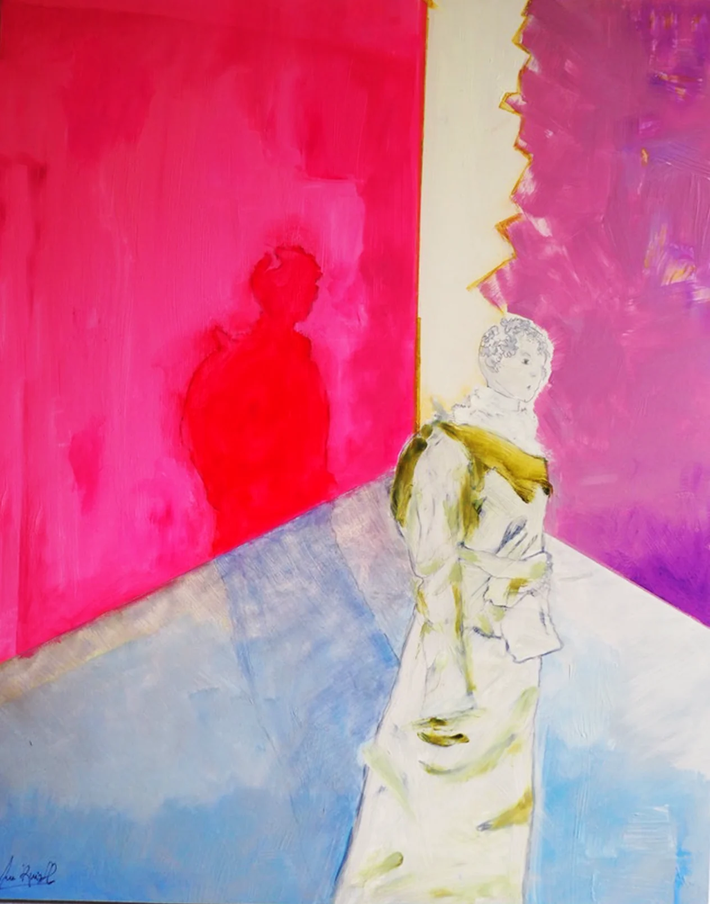
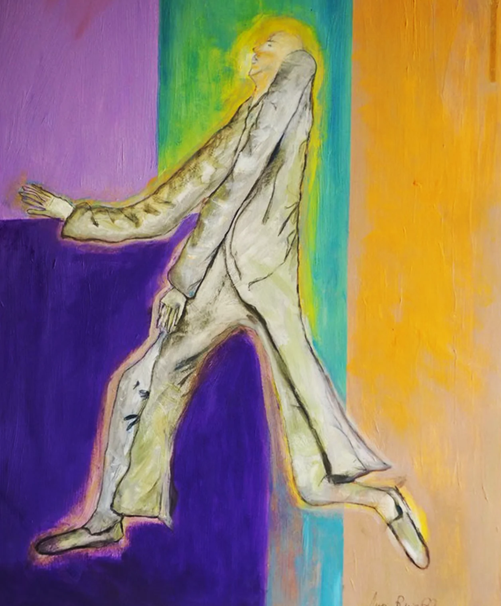
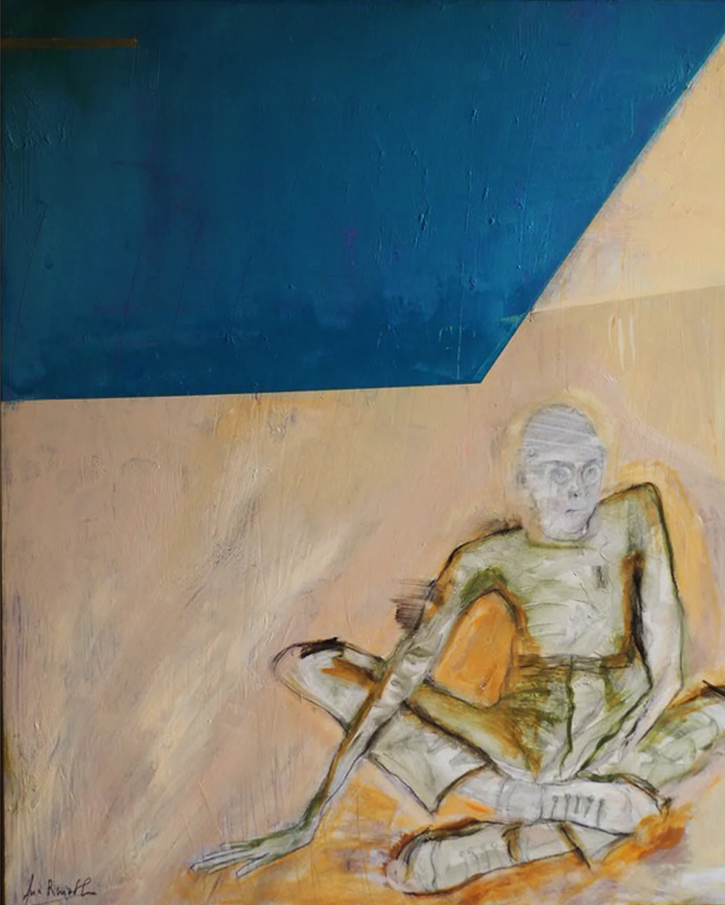
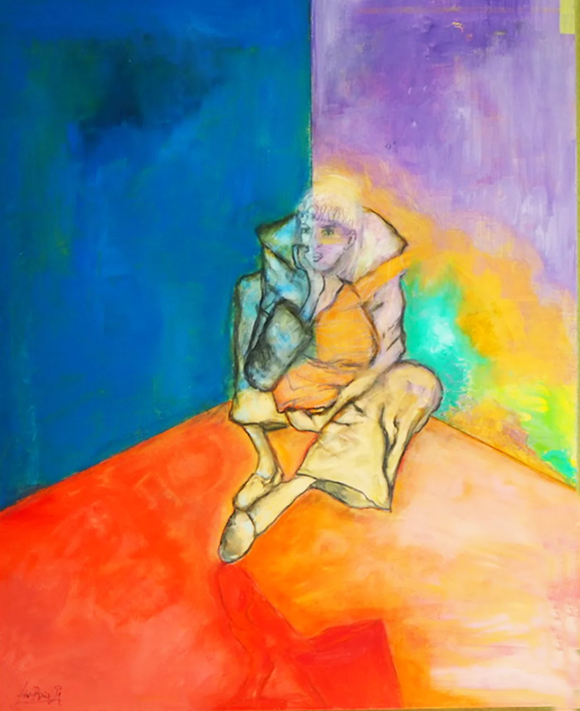